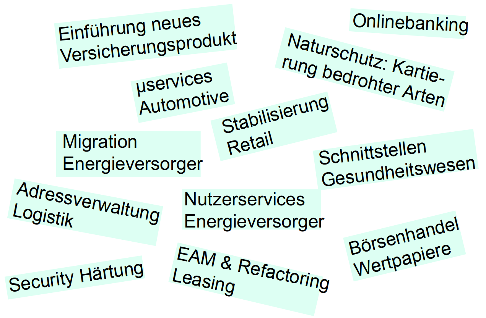

Daniel Krämer
Senior Software Engineer & Architect
Migration und Integration
DevOps
Testautomatisierung
Trainings, Vorträge, Artikel
 dkraemer-anderscore
dkraemer-anderscore
Daniel Krämer
Senior Software Engineer & Architect
Migration und Integration
DevOps
Testautomatisierung
Trainings, Vorträge, Artikel
 dkraemer-anderscore
dkraemer-anderscore


Alternative zu OpenJDK/HotSpot
Truffle Framework: Unterstützung anderer Sprachen über AST
Native Image: Erweiterung für ahead-of-time (AOT) Compilation
Graal Compiler, SubstrateVM
Community Edition vs. Enterprise Edition
Alternativen: Mandrel (Red Hat), Liberica NIK (Bellsoft)
Vorteile
Reduzierte Startup Time
Geringerer Speicherverbrauch
Potentiell kleinere Angriffsfläche (Closed World)
Polyglotte Anwendungen
Eingeschränkt bzw. nicht unterstützt
Reflection (@RegisterForReflection)
Dynamic Class Loading (z.B. JRebel)
Manipulationen des Bytecodes (z.B. Lombok, Profiler, Agents)
Java Debugger (nur GDB)
Vorgeschichte
Micronaut (2018)
GraalVM (2019)
Quarkus (2019)
Spring Native (2019)
Java 17 (2021)
Vollständige Integration in Spring 6 und Spring Boot 3 (2022)
Spring Native deprecated (2023)
Verwendung
Native Image Build (GraalVM):
mvn -Pnative native:compileNative Container Build (Buildpacks):
mvn -Pnative spring-boot:build-imageUnter der Haube
Statische Analyse des Classpaths
Starten des ApplicationContexts (ohne Instanziierung)
Generierung und Auswertung von Metadaten
GraalVM Reachability Repository
Runtime Hints (Spring, Libraries, eigener Code)
Generierung von zusätzlichem AOT Source Code
Entfernen nicht erreichbarer Klassen und Ressourcen
Kompilierung eines nativen Binaries
Bauen eines Docker Images (Buildpacks, optional)
(c) Sébastien Deleuze, VMware Tanzu
(c) Sébastien Deleuze, VMware Tanzu
Zeit für eine Live Demo!
Testing
Unit und Integration Tests auf JVM
Bauen und Starten der Anwendung im AOT Mode:
mvn -Pnative clean package
java -Dspring.aot.enabled=true -jar target/app.jarNative Tests
Verwendung der GraalVM Native Build Tools
Analyse der eingebundenen ApplicationContexte
Generierung von zusätzlichem AOT (Test) Source Code
Generierung und Ausführung eines Images inkl. sämtlicher Tests
mvn -PnativeTest testLimitierungen
Closed World
Classpath
ApplicationContext
Profile & Conditions
Reflection
Resource Loading
Dynamic (Lazy) Class Loading
Generierung von Bytecode (Runtime)
Java Agents
Nativer Migrationspfad
Java und Dependencies aktualisieren
Anwendung im AOT Mode bauen und auf JVM starten
Anwendung und Tests nativ ausführen
Runtime Hints ergänzen
Reflection
Ressourcen
Serialisierung
DynamicProxys
JNI
Spring Boot (native)
Quarkus (native)
Spring Boot (JVM)
Spring Boot (native)
Quarkus (native)
Spring Boot (JVM)
Spring Boot (native)
Quarkus (native)
Geeignet
Eingeschränkte oder "teure" Ressourcen
Hohe Anzahl von Instanzen
Häufige Startups
Serverless / FaaS
Microservices, Container, Kubernetes
Weniger geeignet
Häufige Builds
Intensive Verwendung von Profilen und Conditions
Nutzung problematischer Dependencies
Optimierung auf maximalen Durchsatz
Portierbarkeit jenseits von Containern
Monolithen
Legacy Software
https://www.graalvm.org/native-image/libraries-and-frameworks
https://github.com/oracle/graalvm-reachability-metadata/blob/master/library-and-framework-list.json
https://docs.spring.io/spring-boot/docs/current/reference/html/native-image.html
Folien + Demo: https://github.com/anderscore-gmbh/semicolon-2409
@anderScoreGmbH
 anderScore.company
anderScore.company
 Java_Meetup_anderscore
Java_Meetup_anderscore